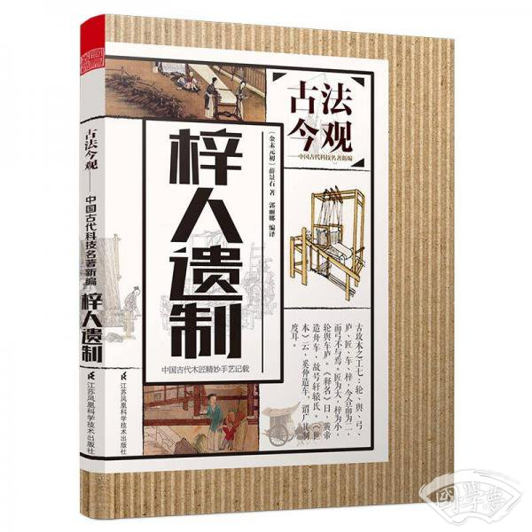

元中统二年（1261年），薛景石撰成这部中国古代唯一一部以木工机械与器具制造为核心的专著。它系统记载了纺织机械、车辆、农具、工具的精确尺寸、结构原理与制作技法，以图样与尺寸规范相结合，填补了中国古代机械木工技术的文献空白，是古代机械工程史上极具价值的实用典籍。

六大维度直观展示元代民间机械木工典籍的独特价值
《梓人遗制》建立了中国古代从纺织机械到交通工具的精密木工技术框架
核心记载：重点记录卧机、立机、布机、罗机等古代纺织机械的精密结构
技术特点：构件尺寸精确、传动逻辑清晰、装配流程规范，代表元代机械木工最高水平
设计原则：结构合理、传动顺畅、用料适宜、制作精准
| 分类 | 具体内容 |
|---|---|
| 纺织机械 | 卧机、立机、罗机、布机、提花机等全套织造设备 |
| 车辆器械 | 太平车、 dialect 车、安车、战车等各类车辆结构 |
| 木工工具 | 量具、夹具、刀具、加工机具的制作与使用规范 |
结构精密化：严格规范轴、轮、齿、杠、弦等构件尺寸，保证传动效率
功能实用化：一切设计服务生产效率，兼顾耐用性与操作性
制作标准化：构件可互换、可复制，便于工匠传承与批量制作
| 构件类型 | 技术体现 |
|---|---|
| 传动构件 | 齿轮、曲轴、连杆、绳轮传动结构精准匹配 |
| 机身框架 | 受力均衡、稳固耐用、符合力学原理 |
| 操作机构 | 省力高效、人机协调、便于连续作业 |
《梓人遗制》建立了从设计到成品的完整机械制作流程，形成可直接操作的工匠技法：
1. 测量绘图 → 构件下料 → 精细加工
2. 部件装配 → 传动调试 → 受力检验
3. 整机校正 → 试用改良 → 定型传承
技法特点：图文互证、尺寸精准、步骤清晰、可直接用于生产，是古代工匠的实操技术手册。
历史地位：中国古代唯一一部民间木工机械专著，元代机械技术的珍贵实物文献。
流传情况：因收入《永乐大典》得以保存，是极罕见的工匠自撰技术典籍。
| 对后世影响 | 具体体现 |
|---|---|
| 技术传承 | 明清纺织机械、车辆制造直接继承其技术体系 |
| 学术价值 | 研究中国古代机械史、木工史、纺织史的核心资料 |
| 现代价值 | 传统机械复原、非遗技艺传承、古代科技史研究重要依据 |
从不同视角理解《梓人遗制》的独特技术价值
| 维度 | 《营造法式》（宋） | 《梓人遗制》（元） | 本质区别 |
|---|---|---|---|
| 性质 | 官式建筑法典 | 民间机械木工专著 | 官方规范 vs 民间技艺 |
| 核心 | 建筑木构架 | 机械传动结构 | 静态结构 vs 动态机械 |
| 目标 | 礼制与等级 | 效率与实用 | 建筑秩序 vs 生产功能 |
| 视角 | 官员编修 | 工匠自撰 | 管理者视角 vs 实践者视角 |
| 方面 | 《梓人遗制》中国机械 | 西方同期机械 | 文化根源 |
|---|---|---|---|
| 技术路线 | 木工传动、实用简易 | 金属构件、精密齿轮 | 材美工巧 vs 数理精密 |
| 记载方式 | 尺寸图示、实操为主 | 理论推演、文献论述 | 工匠经验 vs 学者研究 |
| 应用领域 | 纺织、交通、农具 | 钟表、兵器、建筑 | 民生导向 vs 多元发展 |
| 传承方式 | 师徒口传+典籍辅助 | 学院教育+行业体系 | 民间传承 vs 体系传播 |
《梓人遗制》是中国古代民间工匠智慧的巅峰结晶，也是世界机械史上珍贵的实操典籍。它跳出建筑礼制的框架，专注于机械结构与生产效率，以精准的尺寸、严谨的结构、实用的技法，记录了元代纺织与交通工具的最高技术水平。它不仅是古代木工机械的“制造说明书”，更是中国民间科技精神的重要载体，填补了古代技术史中民间工匠文献的空白，为今天复原古代机械、传承传统技艺、研究东方科技文明提供了不可替代的珍贵资料。